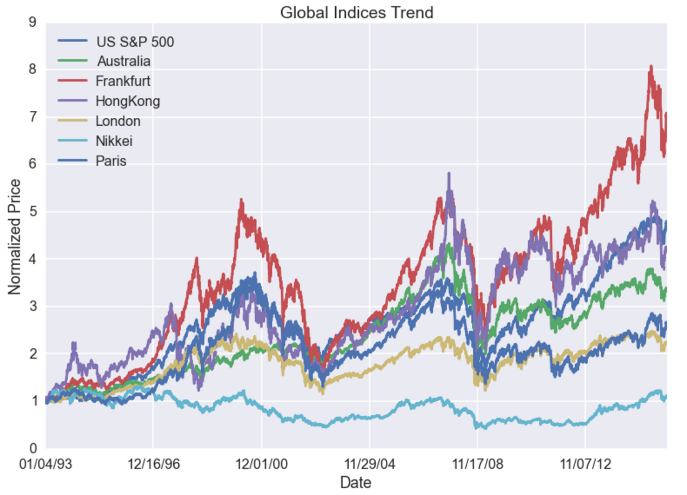

Welcome to GitHub Pages.
Welcome! For our final project, we attempt to use machine learning algorithms to predict the trends of the stock market, specificallly the S&P500 index. Our goal is to predict whether the index will go up or down by the end of a particular week. So essentially we are faced with a binary classification problem. Our baseline, or the worst we can achieve is a 50% accuracy through randomly guessing up or down. We want to improve on that by choosing appropriate data to train our classifiers on.

Our Motivation
If the stock market was predictable, then wouldn't everybody be making money??? Yes, that's why there have been countless attempts made to find some patterns in it from complicated mathematical models to sentiment analysis of tweets. But unfortunately, none have succeeded so far, and the ones that have succeeded would probably keep it a secret. Due to the large volume of information generated by the stock market everyday, we have a lot of data to work with. This is perfect for training machine learning algorithms and testing our classifiers since we will not run out of data to work with. Step1. Step2. Step3.Our Data

We pulled data from Bloomberg, the Federal Reserve Bank, Yahoo Finance and Quandl. Fortunately, the data we looked for were freely available and easy to access. We looked at data related to the S&P500 index such as the pricing of its options, its volatility index, and the stocks closely related to it. We also looked at data that have been known to affect the movement of the S&P500 index such as the consumer price index (CPI), M2 (a measure of money supply), real GDP (gross domestic product), and the yields of treasury bonds. In addition, we looked at the stock indices of global markets such as Germany, Hong Kong, Paris etc. Our rationale for this is that because of globalization, markets nowadays are rarely isolated. For example, the fall of Lehman Brothers affected stock markets all over the world. Similarly, an important event in Germany or Hong Kong could affect the market in the US. Thus we take the representative stock indices of these global markets into account as well.
Our Methods

The machine learning algorithms we used are from the sklearn package in Python. We used Random Forest Classification, Support Vector Machines (SVM),
Our Results
The first method we used is Random Forest Classification and the data is simply the attributes of the S&P500 index itself. We wanted to see if just by looking at simple attributes such as the opening/closing price and high/low of each day, we could improve on our baseline model. As expected, our accuracy was around 50%, so no improvement.
As seen from this chart, the most separable features are DJI and NASDAQ, with distinct conditioned distribution of return. This of course makes sense as they both represent the US stock market overall and a number of stocks are overlapping with that in the basket of S&P 500. However, DJI and NASDAQ would not serve to be good indicators because they appear the same time as S&P 500. More useful information is global indices, which are determined before the close (or even open) of NYSE and NASDAQ - we can act on such information. An interesting observation is that S&P 500 is more closely related to European indices (DAX, Frankfurt, London and Paris) and they are fairly separable, while for Asian and Australian market, the two distributions are barely separable.
The figure above shows the trends of the indices are highly correlated. Dow Jones (DJI) contains 30 large companies and is also contained in S&P 500, weighted differently. The trend of Dow Jones is largely overlapping with S&P 500 but eventually outperforms by a margin. The reason for that is that the constant rebalancing of Dow Jones removes the companies that are no longer considered as "big and representative", and every rebalancing has a bigger effect given that it counts 1/30 of the composite. Such companies with good earning statistics will outperform in the long run. Noticably, between 1999 and 2001, NASDAQ rocketed up but later dropped down almost instantly by more than a half. This is the famous "Dot com bubble" when people got over-excited about high tech companies and resulted in highly overvalued stocks, which is not sustainable. Recently since 2013, NASDAQ soared up again against DJI and S&P, indicating the good investment values in the growing small sized tech companies.
This figure shows that mostly the global indices are correlated, although not as significant as DJI and NASDAQ. The global macroecomomic trends drives the indices. In drastic events like the financial crisis (2008-2009), dot-com bubble influence the global market in all.
Time series plot of the S&P 500 daily return shows constant mean (by symmetry) but not covariance stationary. Large variances happen at time stamps of severe market events (usually bad) - 2008 to 2009 financial crisis, for example. Such property makes it a little hard to apply time series models that generally requires covariance stationarity. We then explore using GARCH to fit this return sequence in section 4.
To test the normality of the return sequence, we plot the histogram of all returns. Even though it looks fairly normal, we should pay attention to the extrema at both tails.
This autocorrelation is very random with no clear pattern of previous memory. This suggests the future returns are hardly correlated with the return standing today, i.e. no momentum.
The cross correlation of S&P 500 vs DJI daily returns shows again very random fluctuations. This indicates we cannot act on DJI last information to predict S&P 500 future returns.

Next, we looked a variety of factors such as the Nasdaq index, currency exchange rate, treasury bond yields and prices of commodities(corn, sugar, gold etc). We created a correlation matrix for these features as seen in the figure below. The darker red spots means the corresponding items are highly correlated, whereas the dark blue spots mean they are highly uncorrelated. From the graph, we can see that Nasdaq's index and international indices are highly correlated with S&P's price.
Plotting Kalman filtered time series at the tail of the S&P 500.
Here we compare the daily trend of the Kalman filtered result vs. observed market trend, where a "True" is a up, and a "False" is a down.
ConclusionTime series models are implemented to fit the S&P 500 trend and forecast. ARIMA fitted the log return with a prediction power of 53%. GARCH model is used to characterize the variance of the time series. Kalman filtering constantly adjust the prediction time series by including the new information. The fitted data has a trend fitting power of over 80%.